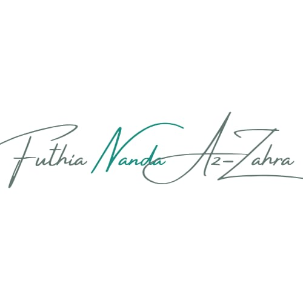

About Me

Nama saya Futhia Nanda Az-Zahra, biasa dipanggil Futhia.
Saya sedang menempuh pendidikan di Universitas Ahmad Dahlan di jurusan informatika dan tertarik dengan pemrograman web.
Banyak hal yang saya suka dan banyak juga hal-hal baru yang ingin saya ketahui terutama tentang teknologi.
Banyak minat saya di dunia teknologi ini, saya suka mencoba berbagai projek mulai dari C++, HTML, CSS, JavaScript, Data Science dan masih banyak lagi.
Planning
Planning saya di masa depan ingin sekali ahli dalam bidang IT yang sudah jelas di zaman modern ini semua hal menggunakan teknologi,
mengambil jurusan informatika bukanlah hal yang mudah bagi saya, dari mulai memahami matakuliah nya,
belum lagi harus minimal bisa di matematika karena hitung hitung nya juga banyak, tapi saya ingin tunjukkan kalau saya bisa.
Saya bisa untuk menjadi seorang Engineering dan saya juga ingin membahagiakan kedua orang tua saya pastinya.
Memiliki gaji tinggi juga termasuk dalam whistlist saya tentunya, tetapi balik lagi dari semua impian saya sudah pasti
saya harus terus berusaha dan belajar dengan rajin dan mendapatkan IPK tinggi.